왼쪽 조건에서 시작해 좌표 계산, 가공, 검사와 보정으로 읽는다. 마지막 보정은 다음 가공을 준비할 때 사용하며 이미 가공한 홀을 이동시키지 않는다.
01. 프로그램 한눈에 보기
기판에서 가공점까지
왼쪽 기판에서 선택한 Cell을 가운데로 확대하고, 그 안의 한 가공 동작을 오른쪽 Shot으로 따라 읽는다. 배열과 개수는 개념 예시다.
Head는 실행 장치, Point는 추적 대상
Head에서 나온 가공 위치를 Beam 배열로 보고, 오른쪽 ID 태그로 결과를 추적한다. 4×4 배열은 DOE 설명용이며 모든 조건이 16 Beam이라는 뜻은 아니다.
02. 장비 역할과 공정 흐름
기판을 중심으로 장치 역할 보기
기판 아래의 Stage 이동, 위쪽의 Scanner·Laser, 오른쪽의 Vision을 나누어 본다. 제어 요청과 실제 장치 동작은 별도로 확인한다.
03. 프로그램 구조와 실행 데이터
시작 시 객체가 연결되는 방식
CAppStartup에서 공유 객체를 조립한 뒤 RootView와 각 기능으로 전달되는 화살표를 따라 읽는다. 모든 선이 장치 명령의 실행 순서를 뜻하는 것은 아니다.
이번 기판의 실행 사본
준비 화살표를 지난 값이 실행 사본이다. 아래의 끊긴 편집 경로는 나중 편집이 사본을 직접 바꾸지 않음을 뜻하며, 보정본 변경 후 실행에는 재준비 검사가 따른다.
04. 실행 준비와 설정 관리
실제로 읽는 Config 위치
실행 위치에서 상위 탐색 화살표를 따라가고, Drilling.sln 발견 여부에 따라 옆 Config 또는 작업 폴더 Config로 갈라 읽는다.
05. Recipe·PPID·운전 조건
VIEW·SELECT·SAVE를 나누어 읽기
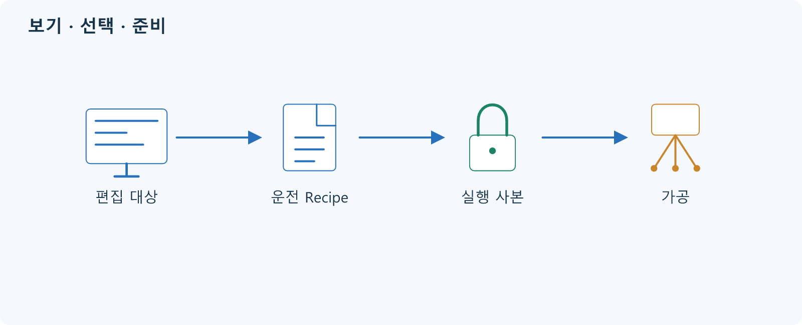
화면은 편집 대상, 문서는 운전 Recipe, 자물쇠는 준비된 실행 사본을 나타낸다. 화살표는 선택·준비 동작을 거친 연결이며 열기만으로 가공 조건이 바뀐다는 뜻은 아니다.
PPID와 전체 조건 전환의 경계
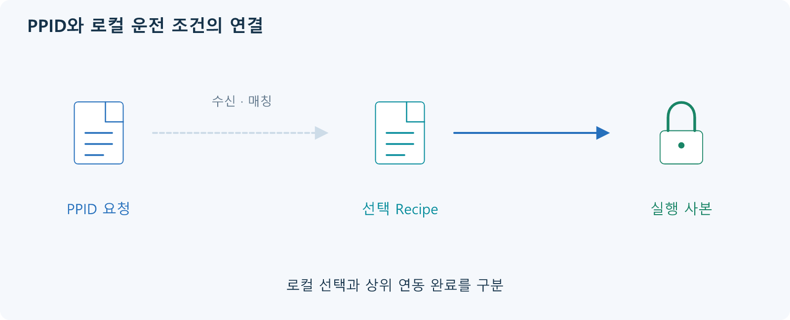
왼쪽 PPID 요청과 로컬 Recipe 선택은 다른 단계다. 회색 점선은 상위 수신·매칭과 연동 확인의 경계이며 로컬 선택 성공만으로 전체 전환 완료를 뜻하지 않는다.
06. 좌표 변환과 Head 분담
같은 점을 다른 기준으로 표현하기
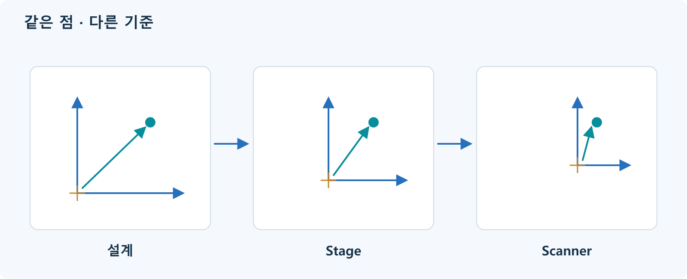
세 패널의 목표점과 원점에서 목표로 향하는 벡터를 비교한다. 그림은 기준 변화의 개념도이며 특정 장비의 실제 교정값을 나타내지 않는다.
Head 배정과 AK Margin
각 Head 중심과 영역 안의 점을 본다. 경계가 겹치면 후보가 여럿일 수 있으므로 실제 배정 결과를 함께 확인한다. 영역 폭과 점 위치는 설명용이다.
가공 제외와 검사점 선택
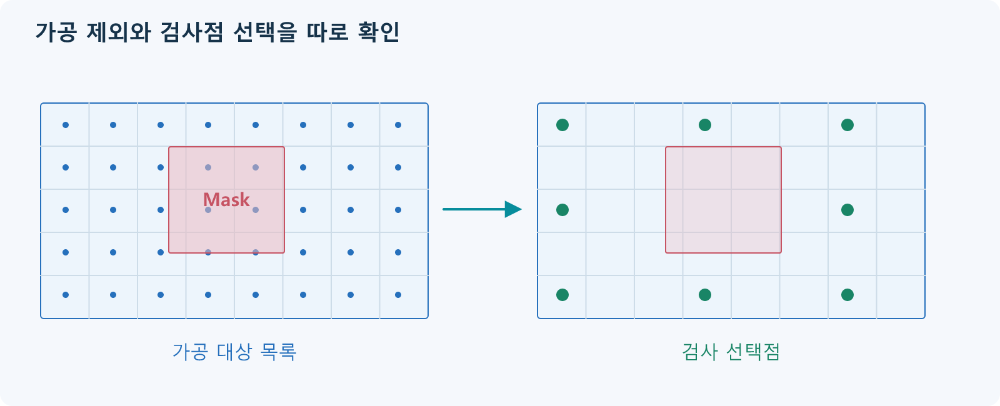
왼쪽의 Mask 영역과 오른쪽의 검사 선택점을 비교한다. 빨간 영역은 대상 제외, 초록 점은 선택한 측정 대상이며 화살표는 장치가 장애물을 우회하는 이동 경로가 아니다.
Offset을 합칠 때 지켜야 할 경계
위쪽은 기준과 방향을 맞추는 좌표 보정이다. 아래 Y Shift가 대기거리를 바꾸면 Scanner Base Y와 Encoder Count도 함께 달라진다. 합성한 보정을 최종 좌표에 다시 더하지 않는다.
DOE 배열의 중심과 실제 Beam
왼쪽의 실제 배열점과 오른쪽의 계산 중심을 비교한다. 중앙 표시가 실제 Hole이나 원빔 출사점을 의미하는지 먼저 구분해야 한다.
07. Scanner·MOF 실행
Encoder가 가공 시점을 연결한다
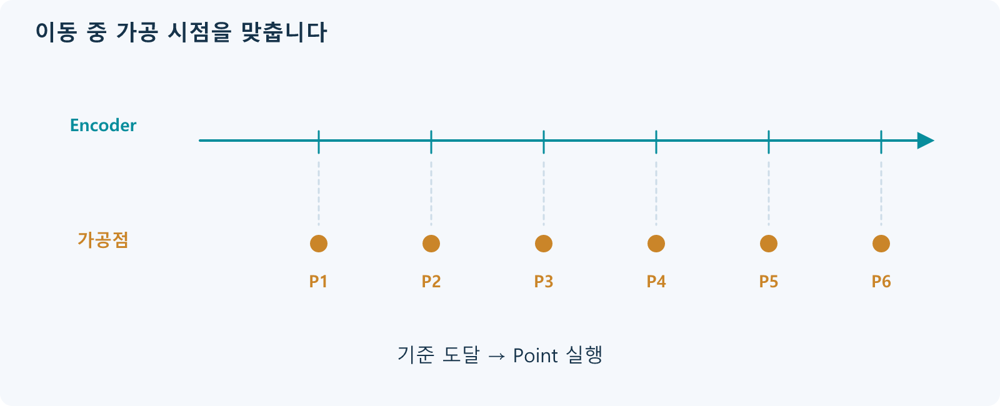
위의 Encoder 진행에서 아래 Point로 내려오는 점선을 따라 읽는다. 눈금과 간격은 개념 예시이며 실제 Count나 가공 간격을 뜻하지 않는다.
일반 실행과 Buffered 실행
왼쪽은 컴파일한 Program, 오른쪽은 명령을 담는 Queue다. 두 경로를 같은 실행 함수나 같은 완료 표시로 합쳐 읽지 않는다.
08. Align·Review·검사·보정
현재 기판의 Align과 다음 준비의 Review
위의 현재 기판→Align→가공→Review를 읽은 뒤, 보정본에서 아래의 다음 가공 준비로 이어지는 화살표를 본다. 현재 홀을 다시 이동시키는 흐름이 아니다.
영상 좌표를 오차 mm로 바꾸기
왼쪽의 0.000은 성공한 측정의 유효한 오차일 수 있다. 오른쪽 실패·미수신은 숫자 0으로 대체하지 않고 검출 상태와 Point·회차를 함께 확인한다.
Fine은 같은 X열에서 Y방향으로 계산한다
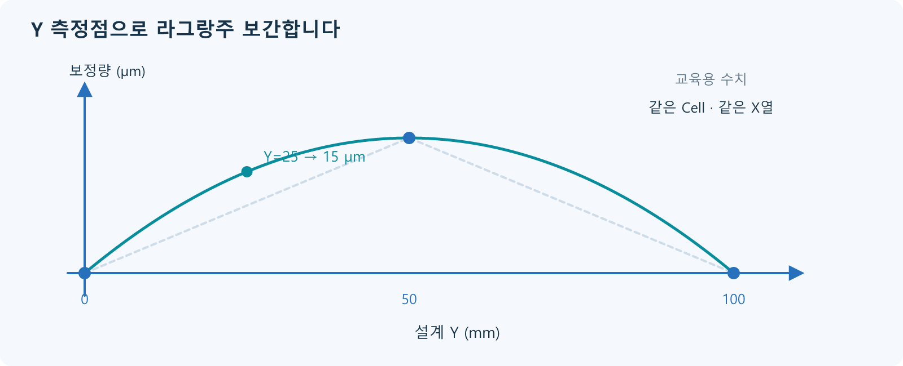
파란 측정점과 청록 보간곡선, 회색 점선을 비교한다. 숫자는 계산 방식 설명용 합성 예시이며 실제 측정값이나 장비 허용오차가 아니다.
Fine과 Distortion의 계산·저장 차이
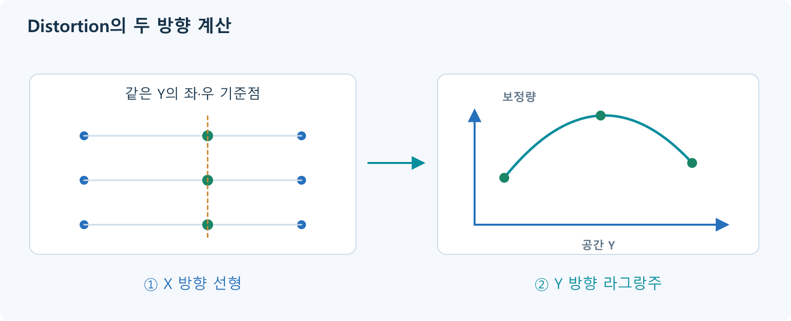
각 행의 좌우 측정점에서 먼저 같은 X위치의 값을 구하고, 그 값들을 세로로 모아 Y보간하는 순서로 읽는다. X/Y는 여기서 공간 방향을 뜻한다.
검사 종류와 보정 적용 범위
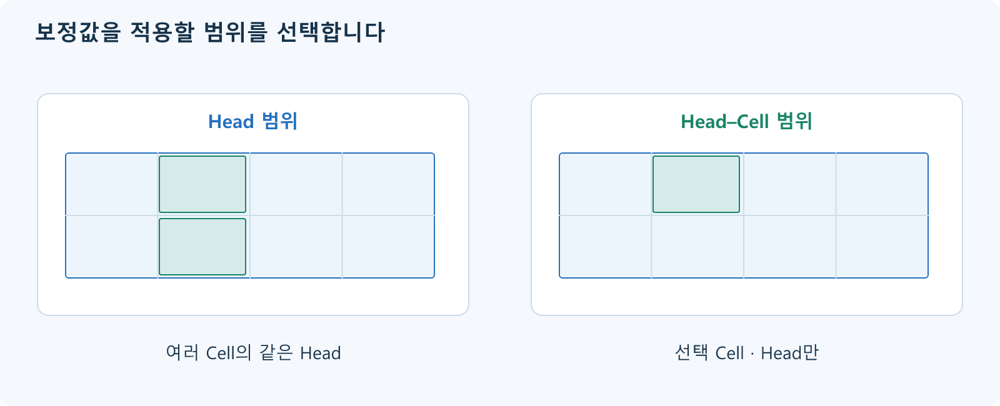
왼쪽은 여러 Cell에서 같은 Head가 담당하는 범위, 오른쪽은 선택한 Cell·Head 조합이다. 대표 측정값의 적용 범위를 정하기 위한 비교이며 두 범위를 무조건 겹쳐 누적하지 않는다.
후보 계산·저장·다음 적용을 구별하기
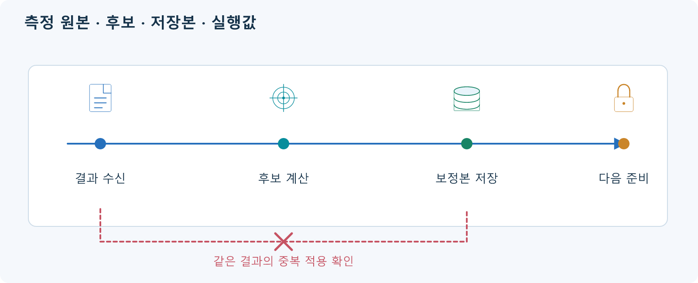
측정 결과에서 후보 계산과 보정본 저장을 거쳐 다음 준비로 이어진다. 0선 후속은 기존 보정을 유지하며, 같은 결과를 새 측정처럼 다시 누적하지 않는다.
09. 통신과 장비 인터페이스
요청을 보낸 뒤 어느 단계까지 끝났는가
위에서 아래로 요청→Driver→장치 전달과 되돌아오는 응답을 따라간다. 마지막 응답을 현재 요청의 수락·진행·완료 중 어떤 상태로 사용할지 구분한다.
값과 함께 수신 시각·오류를 확인한다
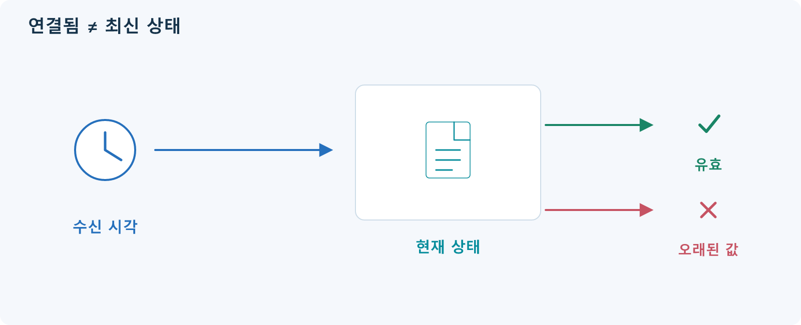
시계는 수신 시각, 문서는 Snapshot을 뜻한다. 연결이 살아 있어도 오래된 값이나 읽기 오류는 현재 상태 판정에서 구분해야 한다.
10. 광학 장치와 Power 측정
장치별로 제어하는 값이 다르다
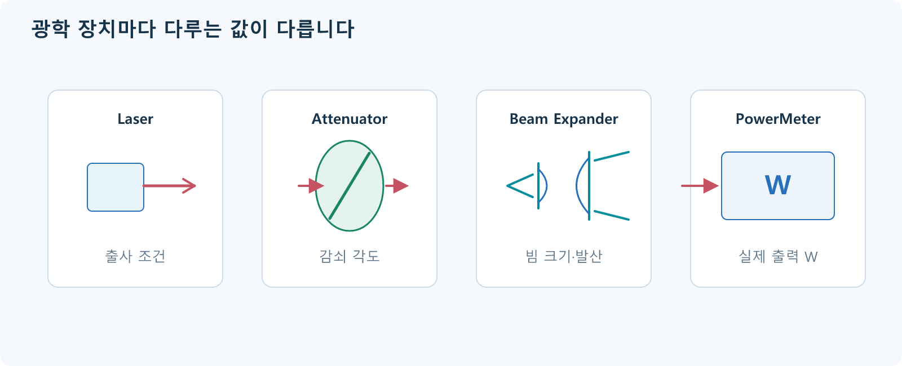
각 칸은 장치의 역할을 병렬로 비교한 것이다. 설치 순서를 뜻하지 않는다. Laser의 출사 조건, ATT 각도, BEX의 빔 조건과 PowerMeter의 실제 W를 서로 다른 값으로 읽는다.
유효 측정값으로 평균과 오차를 계산한다
가로 방향은 시간이다. 출사 직후 구간은 평균에서 제외하고 유효 수집 구간의 새 샘플을 사용한다. 그림의 파형은 구간 설명이며 실제 출력 실측값이나 고정 시간 기준이 아니다.
보고가 만들어져도 Recipe 저장 여부는 따로 판단한다
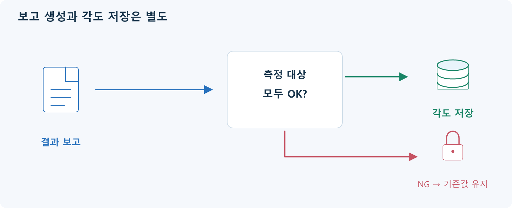
왼쪽은 결과 보고, 가운데는 측정 대상 전체의 OK 판정이다. 정상 경로에서만 각도 저장으로 진행하고 NG 경로는 기존 각도를 유지한다. 보고 존재와 저장 완료를 같은 표시로 묶지 않는다.
11. 운전 화면과 Manual·Auto
화면에 보이는 값의 출처와 시점
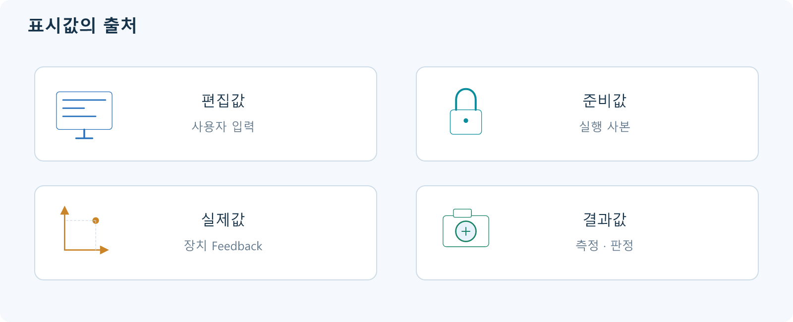
네 칸은 시간 순서가 아니라 값의 출처다. 편집값·준비 사본·장치 피드백·측정 결과를 비교하여 값이 달라진 경계를 찾는다.
12. Alarm·Interlock·Stop·Reset
Reset과 원복은 정해진 대상에만 적용된다
알람 목록 Reset과 원인 해소 사이의 ≠ 표시는 별도 확인이 필요하다는 뜻이다. 목록이 비어도 실제 장치와 남은 작업을 확인해야 한다.
보호윈도우 매수와 추가 요청
처음 Request와 추가 요청을 분리해 따라간다. Stage 인계값을 저장·보고한 뒤 OFF를 확인하고, 남은 추가 횟수와 소진 경로를 판단한다.
재개할 작업의 기준을 다시 만든다
Task·Queue의 처리, 축·출력의 실제 상태, 기판의 완료/미완료 구간을 확인한 뒤 재준비로 진행한다. 화살표는 판단 순서이며 모든 항목을 한 번에 자동 복구하는 기능을 뜻하지 않는다.
13. 개발 시험과 결과 확인
입력·기대·관찰·판정을 연결한다
입력 고정과 기대값 정의를 먼저 하고, 실행해서 얻은 관찰값을 비교한다. 마지막 판정은 실제 기록에 근거하며 그림 자체가 통과 기록은 아니다.
시험 환경을 단계별로 넓히고 결과를 남긴다
계산·모의·출력 차단·가공/측정은 확인하는 대상이 다르다. 단계마다 조건과 결과를 남기며, 아래의 미실행 ≠ 통과가 모든 단계에 적용된다.
14. 현재 기능과 개발 확인사항
기능을 화면 한 개나 파일 한 개로 끝내지 않는다
입력·실행값·장치·저장 결과를 같은 대상으로 대조한다. 특정 화면이 완성됐다는 사실을 전체 기능의 완료로 확대하지 않는다.
15. 증상별 개발 확인
처음 달라진 자료부터 확인한다
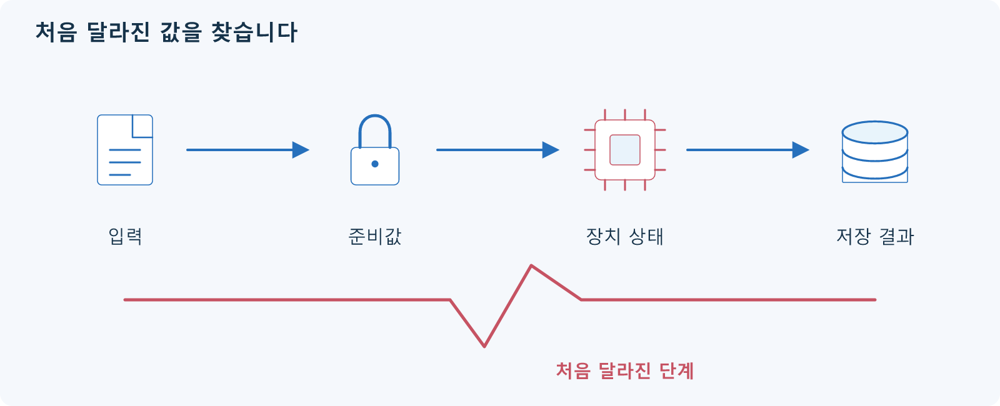
입력→준비값→장치 상태→저장 결과를 순서대로 비교해 처음 달라진 단계를 찾는다. 빨간 변화는 비교 위치의 개념 표시이며 특정 장치의 실측 이상 파형은 아니다.알람 전후 시간창에서 후보를 좁히되 같은 작업 식별자와 원문으로 확인한다. 가까운 행이나 규칙 순위만으로 물리 원인을 확정하지 않는다.
16. 데이터 관리와 변경 반영
자료 종류와 소유하는 값을 나눈다
가로 배치는 처리 순서가 아니다. 각 아이콘은 서로 다른 역할의 자료이며, 결과를 복사한 것과 보정 적용본을 만든 것은 다른 작업이다.
변경이 실행값으로 반영되는 단계
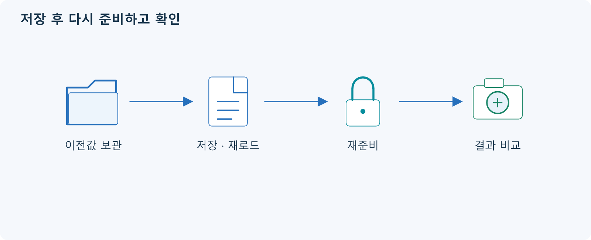
이전값 보관→저장·재로드→재준비→결과 비교의 순서로 읽는다. 파일이 존재하거나 저장됐다는 사실만으로 실제 실행값의 반영을 확정하지 않는다.